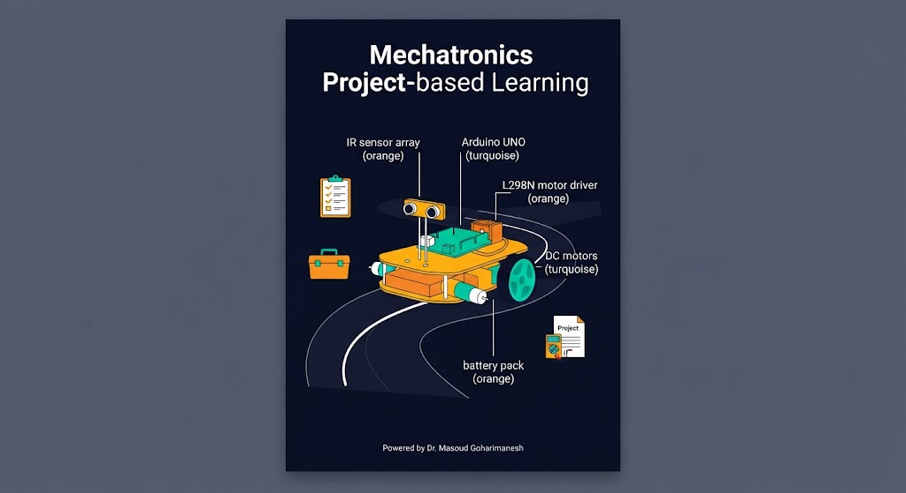
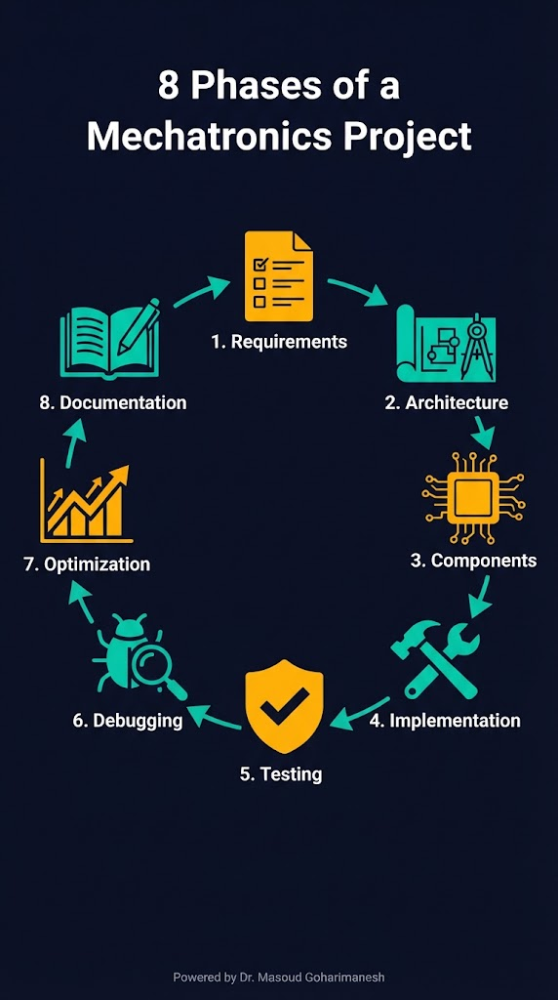
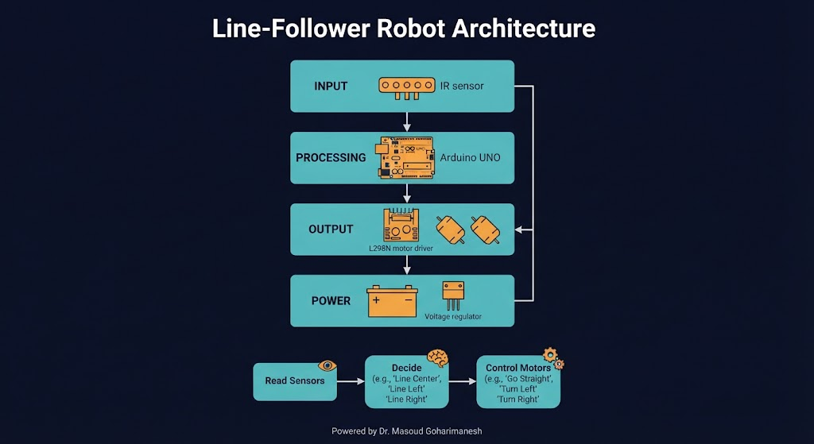
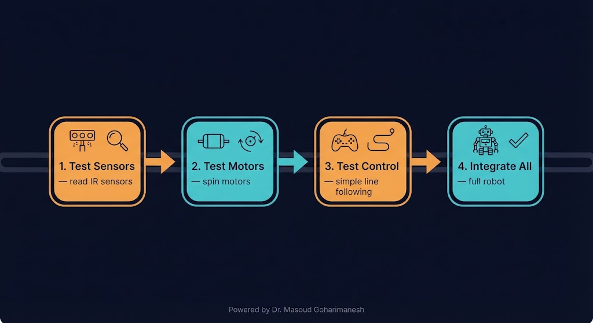
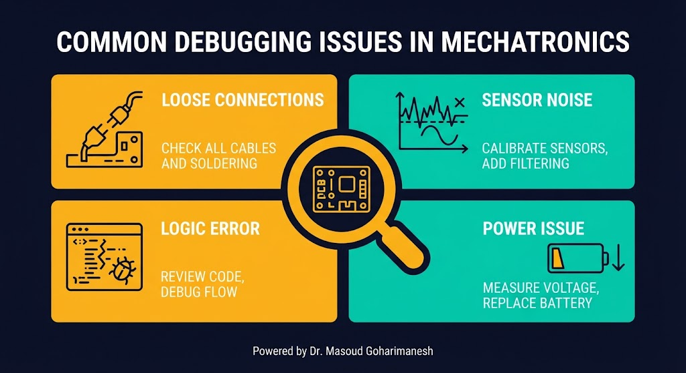
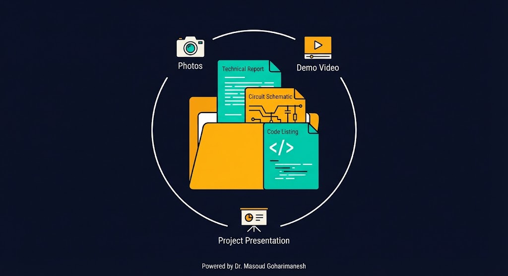
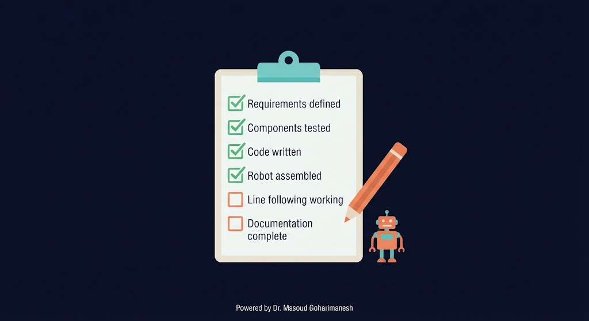
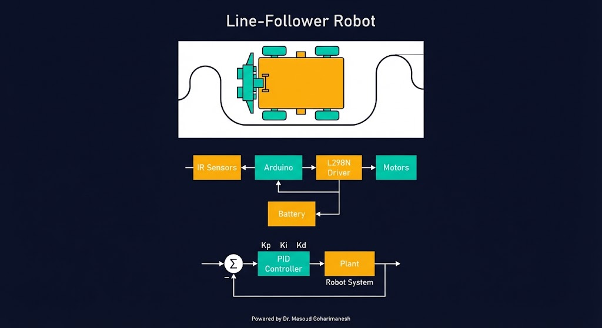

طراحی و پیادهسازی سیستم مکاترونیکی
دکتر مسعود گوهریمنش
دانشیار گروه مهندسی مکانیک
دانشگاه تربت حیدریه | پاییز ۱۴۰۵
یک پروژه خوب، فقط کد نوشتن نیست — مدیریت زمان و منابع هم هست!
اگر ربات شما روشن نمیشود، از کجا شروع میکنید؟ مراحل عیبیابی چیست؟
۸ فاز اصلی

تعریف دقیق هدف
طراحی سختافزار و نرمافزار
انتخاب و تهیه
ساخت مدولار
Requirements Specification
سختافزار + نرمافزار

ماتریس تصمیمگیری
| قطعه | مشخصه | کاربرد |
|---|---|---|
| Arduino UNO | ATmega328P | پردازش |
| L298N | 2A/ch | درایور موتور |
| IR Array | 5ch | تشخیص خط |
| DC Motors | 6V, 200RPM | حرکت |
| Battery | 7.4V, 2200mAh | تغذیه |
گام به گام، تستپذیر

آیا همه چیز درست کار میکند؟
هر ماژول جداگانه
تعامل ماژولها
عملکرد کل ربات
مشکلات رایج و راهحل

بررسی سیمها، استفاده از بردبورد محکم، تست با مولتیمتر
میانگینگیری، فیلتر سختافزاری، جدا کردن سیمهای موتور از سنسور
مرور کد، Serial.print برای دیباگ، بررسی شرایط مرزی
بررسی ولتاژ باتری، ظرفیت جریان، افت ولتاژ در بار
از کارکردن تا عالی کار کردن
تنظیم دقیق Kp، Ki، Kd برای نرمی حرکت
استفاده از قطعات سبکتر، حذف قطعات غیرضروری
خواب عمیق در زمان بیکاری، کاهش مصرف
نکته: بهینهسازی را بعد از اطمینان از کارکرد صحیح انجام دهید. اول درست کار کند، بعد سریع/سبک/کممصرف شود.
ارائه حرفهای پروژه

آیا همه موارد را رعایت کردهاید؟

نیازمندیها تعریف شد
قطعات تست شدند
کد نوشته شد
ربات مونتاژ شد
تعقیب خط کار میکند
مستندات کامل است
یک پروژه کامل از صفر تا صد

چکلیست پیشرفت پروژه
روی هر مرحله کلیک کنید تا آن را تکمیل کنید.
جلسه بیستوسوم - پروژه عملی (بخش اول)
نکات کلیدی جلسه بیستوسوم
جلسه بعد: پروژه عملی (بخش دوم) — ارائه نتایج
Powered by Dr. Masoud Goharimanesh